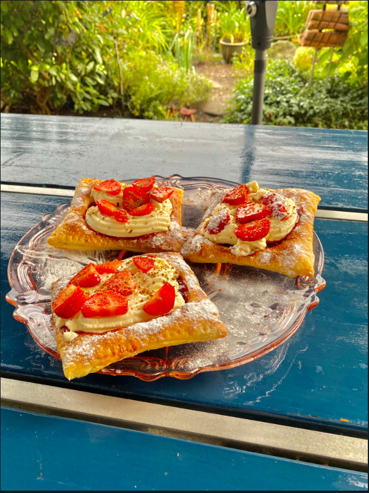

De lekkerste recepten op het wijde web
- Aardbijengebak 
- Broodje caprese

- Kip pesto lasagne

- Rijstvel dumplings
Over mij
Hallo, Ik ben Julian Meijer. Ik kook en bak graag en dat is ook een beetje de reden dat ik deze website heb gemaakt. Op deze website zal je vooral recepten zien die erg lekker zijn om te maken.
Bronvermelding:
- Broodje Caprese: https://www.foodhunting.nl/luxe-broodje-caprese
- Kip pesto lasagne: https://www.lekkerensimpel.com/kip-pesto-lasagne
- Rijstvel dumplings: https://www.studiokook.nl/rijstvel-dumplings-met-vegetarische-vulling/